Foundations and slabs
Monolithic and standard foundations for homes, additions and commercial buildings.
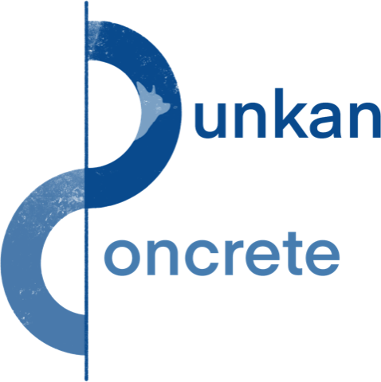
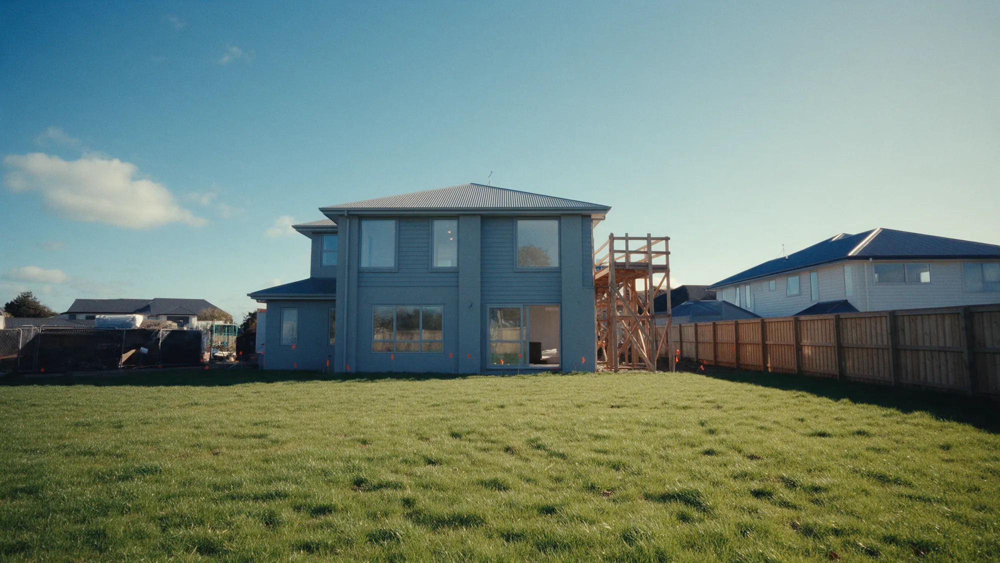
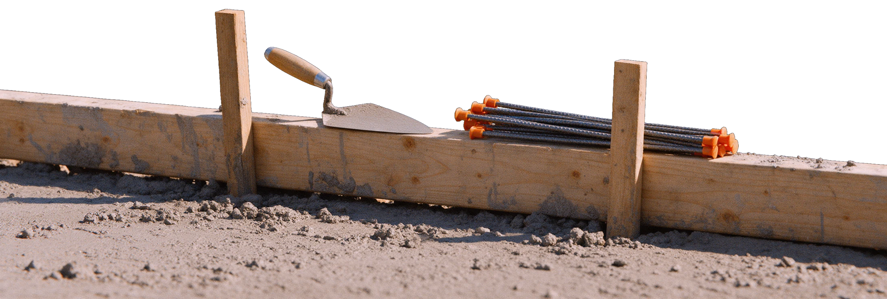
Dunkan Concrete pours foundations, driveways and walkways across Tucson and southern Arizona. Done right, the first time.
A truck of concrete gives you about ninety minutes.
Then it starts to set. No undo. No second pour.
Skip the prep, add a little water, rush the finish, and you'll see it in the cracks for years.
This is not a weekend project.
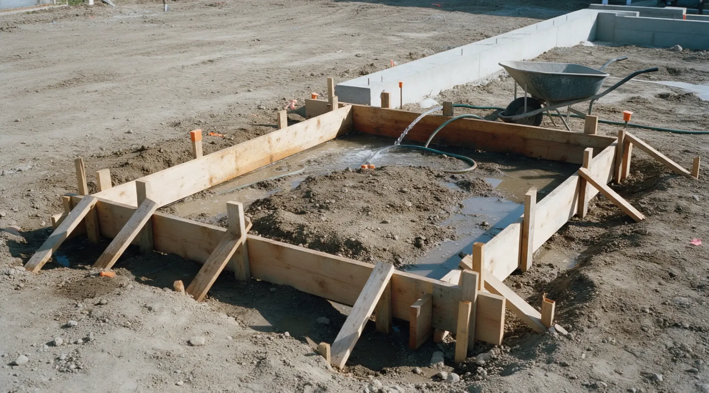
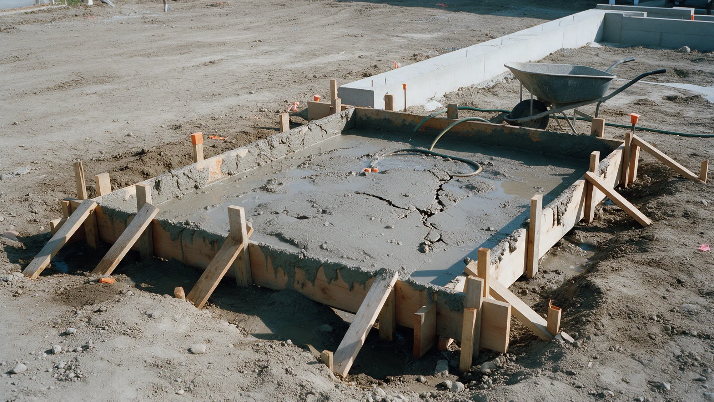
The rushed pour
A wet, loose base settles. The slab on top of it follows.
Extra water makes concrete easy to place and much weaker once it cures.
No steel, no planned joints, so the slab picks its own places to break.
Breaking out and re-pouring costs more than doing it right once.
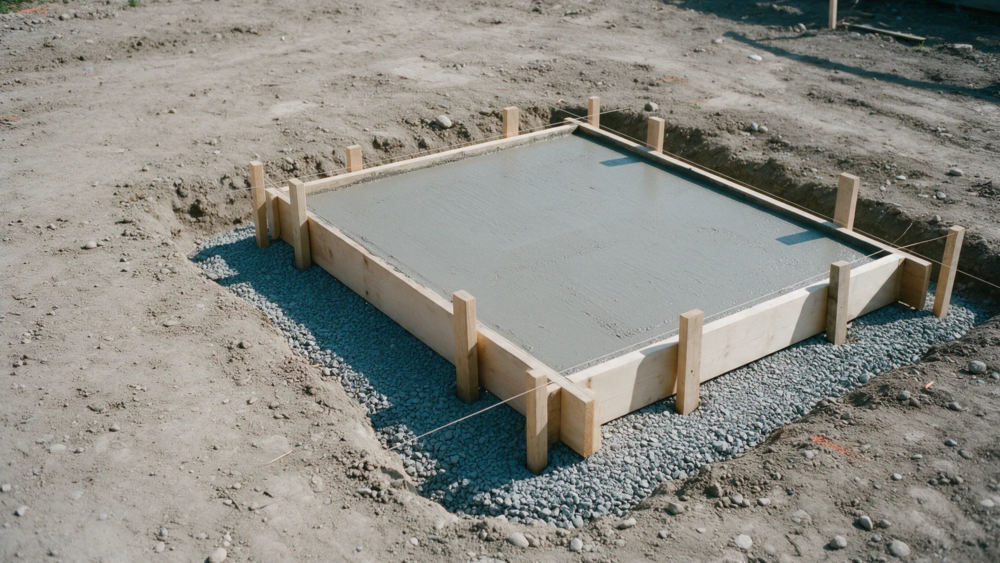
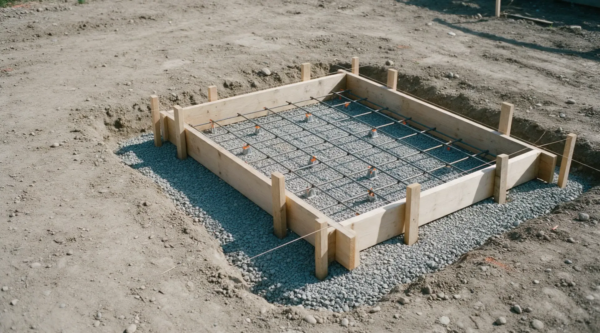
The right way
Poured. Level. You may pass.
Residential and commercial. Free estimates on every job over 300 square feet.
Monolithic and standard foundations for homes, additions and commercial buildings.
New driveways poured 4 inches thick and 5 at the edges. The old one comes out for a small fee.
Curbs, sidewalks and walkways, jointed every ten feet so cracks have a place to go.
Salt, broom, sweat or exposed aggregate finish, in most Davis pigments.
A new surface over concrete that is worn but still sound.
Paver patios and walks, and turf where the yard needs it.
Not sure which one you need?
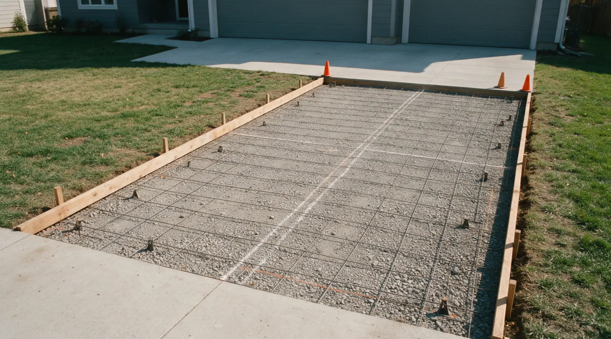
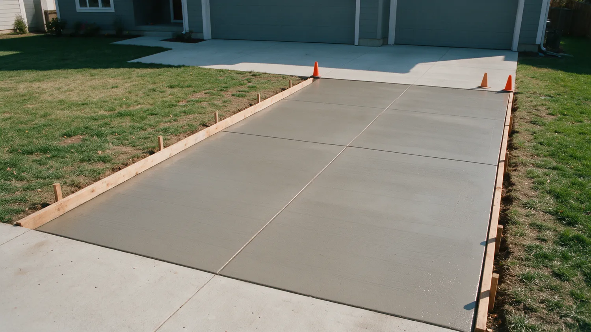
Driveways and walks
Compacted and graded so water runs away from the house.
Control joints are laid out before the truck arrives, not guessed afterward.
Broom, salt, sweat or exposed aggregate. Your call.
A few recent pours. Ask us for more near you.
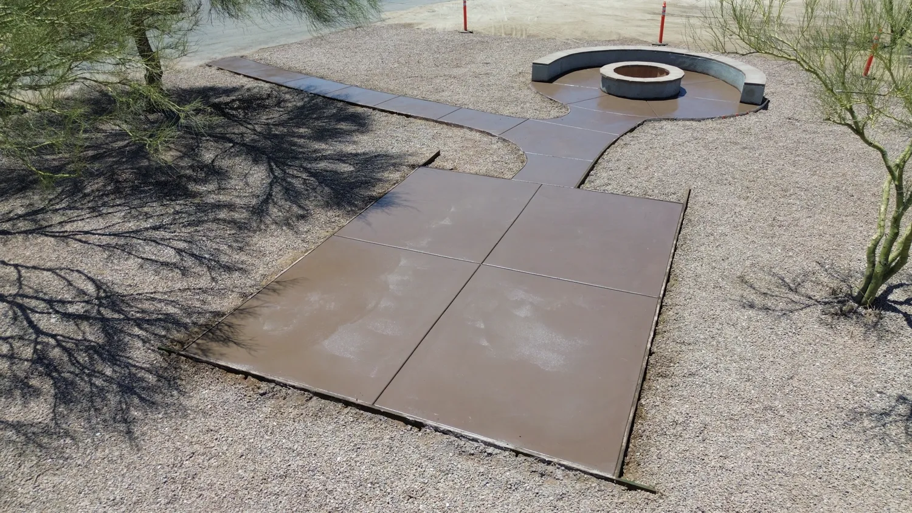
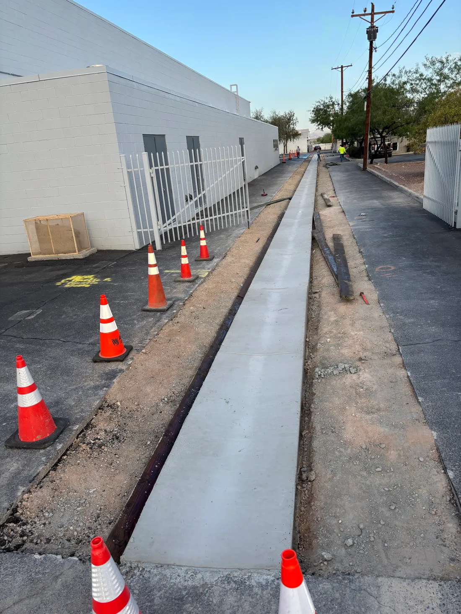
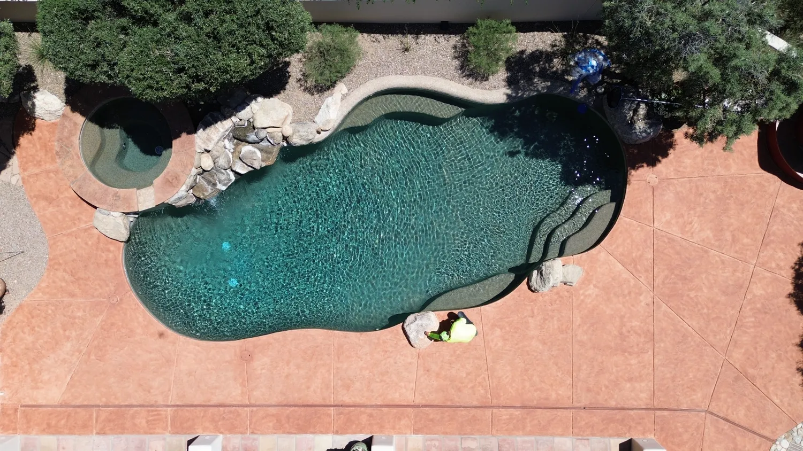
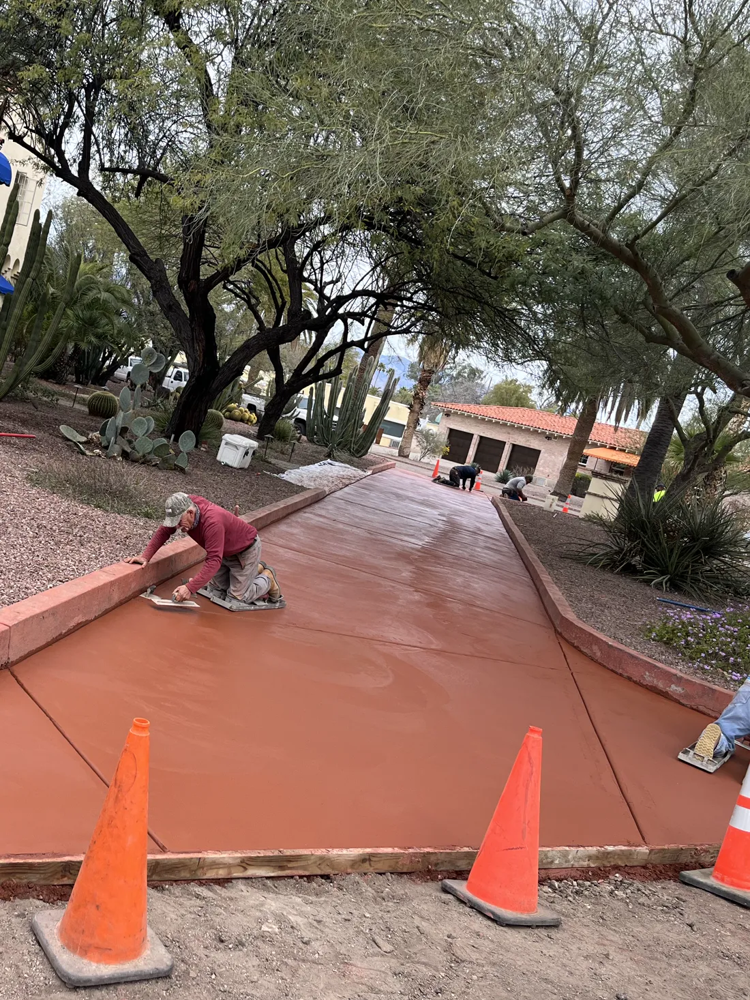
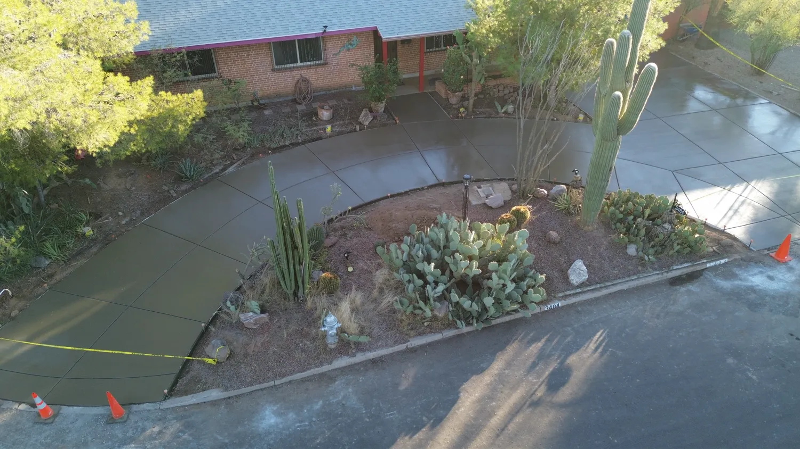
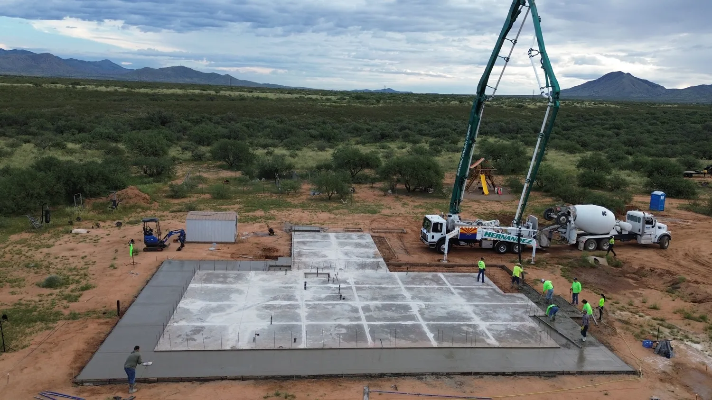
Concrete is hard to judge until it's too late to change. So we put the important parts in front of you early.
We look at the site, give you a number, and follow it up by email. Residential or commercial.
4 inches thick, 5 at the edges, 3,000 psi concrete and #3 rebar at the perimeter are standard. Higher psi, wire mesh or more rebar on request.
ROC #347169 and #367143, with a $1,000,000 insurance policy.
Every pour carries a 5-year warranty against major cracking and displacement.
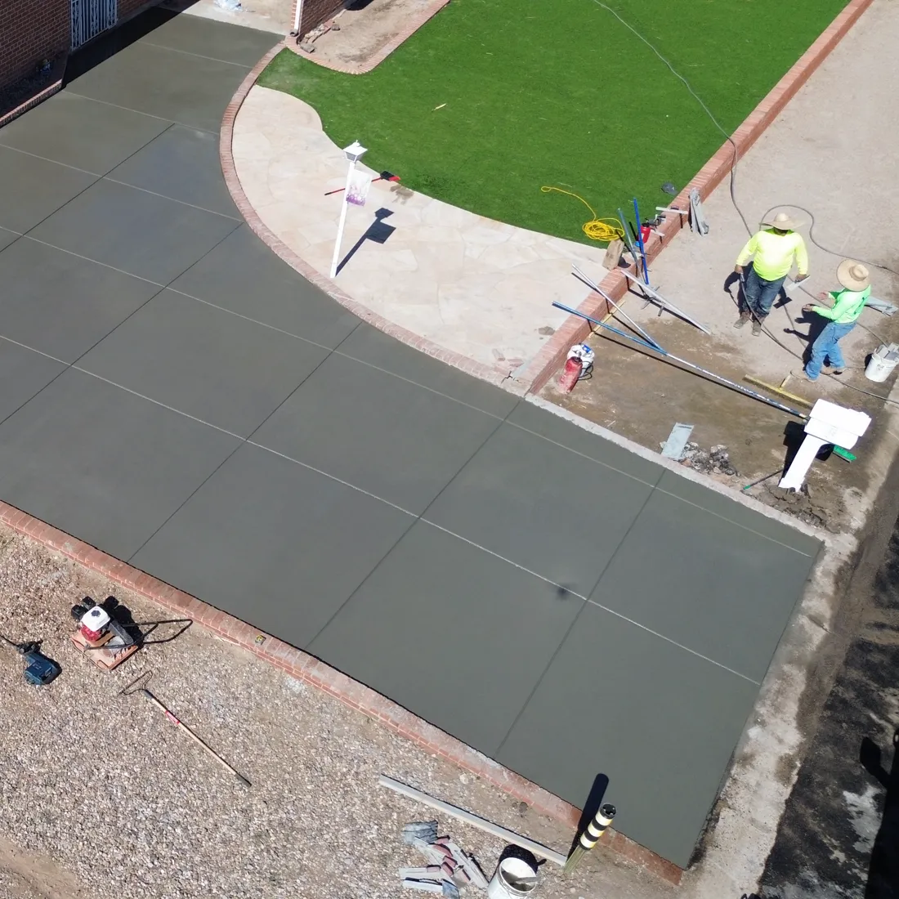
Dunkan Concrete has served the Tucson area for about ten years, pouring concrete and building masonry and hardscapes for homes and commercial projects.
Our mission is simple. We work on your home as if it were our own, and we talk it through with you so the finished job matches what you pictured.
Serving Tucson and southern Arizona and the towns around it.
Not on the list? Call. If it's within reach of Tucson, we'll tell you straight whether we can take the job.
Call (520) 396-99555.0 average from 113 reviews. Read them on Yelp
Adrian (Owner) was very personable, polite and professional. He answered all my questions without hesitation and with confidence. The pricing is extremely competitive and the results are top notch. They even fixed a few of my bricks while they were at it, free of charge.
Adrian installed a new 16' drain channel in our driveway to replace one that failed. The team was awesome with excellent communications. They used the highest quality materials and matched the existing driveway aggregate perfectly.
I needed a new set of entry stairs poured at my house. Adrian was quick to return my call, answer questions and set an appointment to look at the site and give a quote. They arrived on time and completed the job in one day. I love the new stairs!
Adrian and the crew did a fantastic job on my concrete. They were timely, courteous, and efficient. The concrete was completed within the quoted time frame. I will use them again for any of my concrete needs.
Tell us what you want poured and where.
Free on-site estimate. We measure, check access and drainage.
One clear quote. Price, scope, schedule.
Prep, forms, pour, finish, cure. Then a walkthrough with you.
Within 5 days of completion.
Two days for the smaller ones, three to five days for the larger ones. A new driveway usually starts in two to three weeks.
Four inches thick, five at the perimeter. A 3,000 psi mix and one #3 rebar at the perimeter are included. Higher psi, wire mesh or more rebar are optional.
Unfortunately, yes. Because of scheduling we only take projects over 300 square feet. To find yours, multiply the length by the width.
Salt, broom, sweat and exposed aggregate finishes. Colored concrete is available in most Davis pigments.
Yes, for a small fee.
You can, but we don't recommend it. Sealing creates a maintenance commitment.